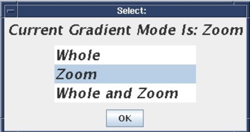

| NOTE: | For the WHOLE (i.e the first mode) , ZOOM (i.e. the second mode), continue with the next step. For the WHOLE and ZOOM (i.e. the third mode), go to Step 6. |
(To switch modes, you will need to exit, and restart Grafidy 3 in the other mode.)
Illustration 4: Selecting Gradient Mode
